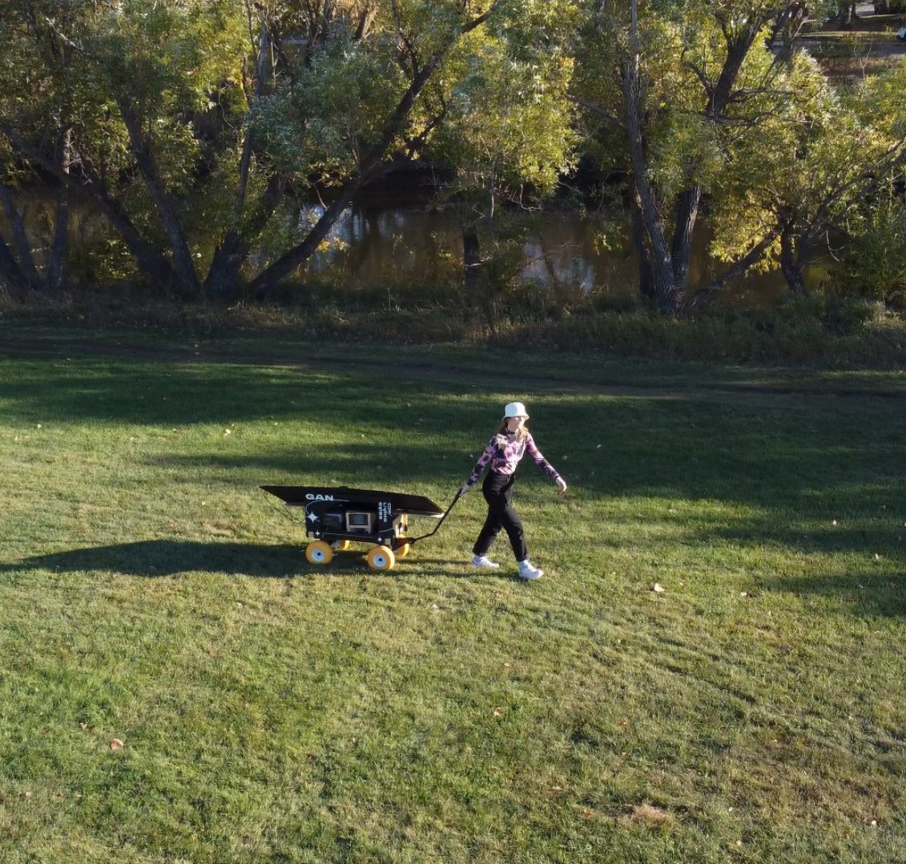
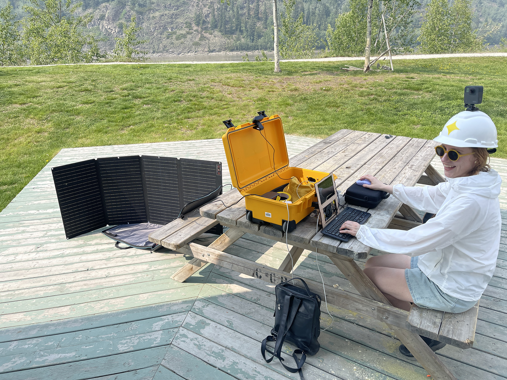
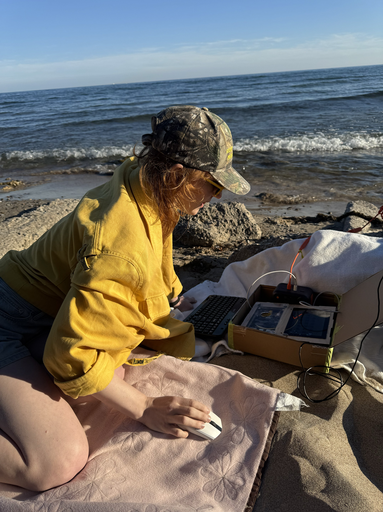
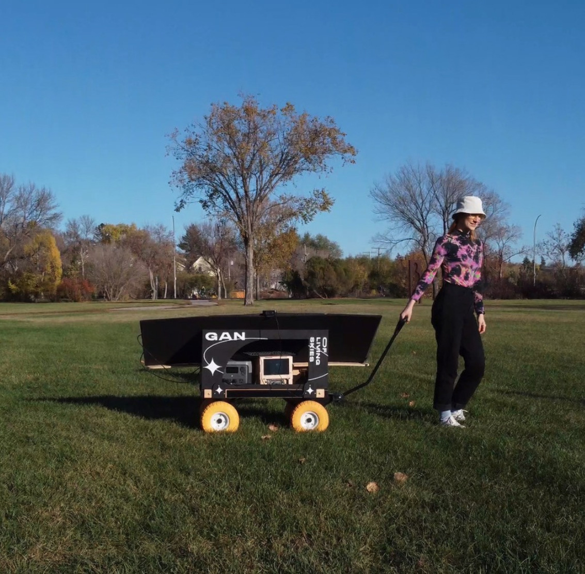
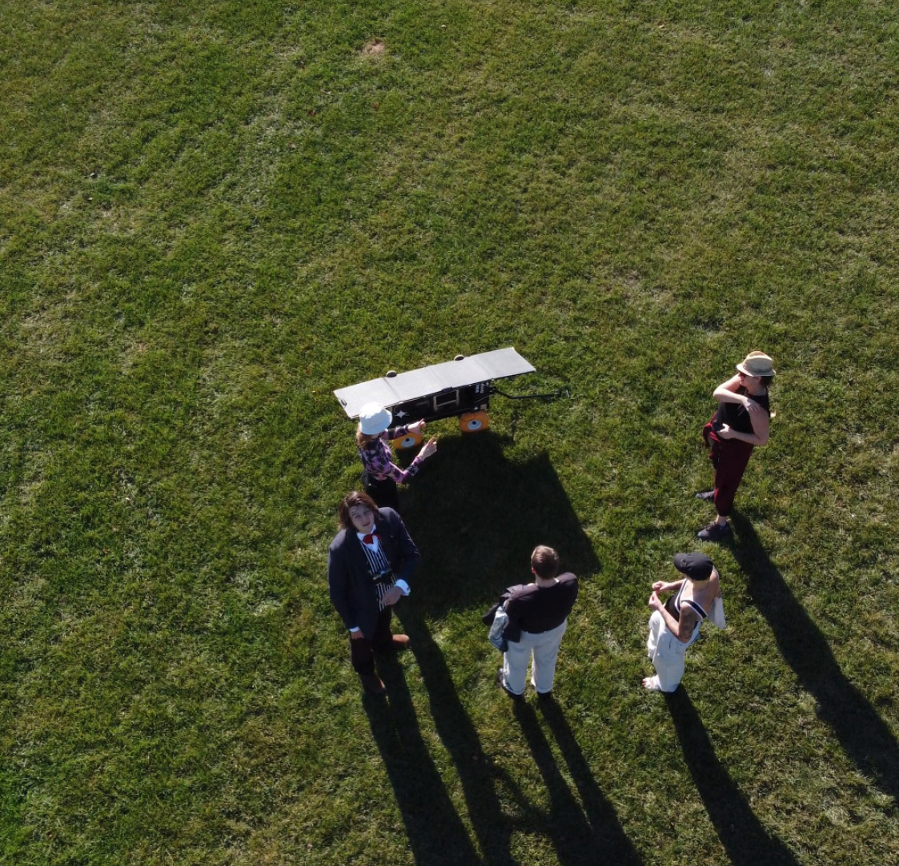
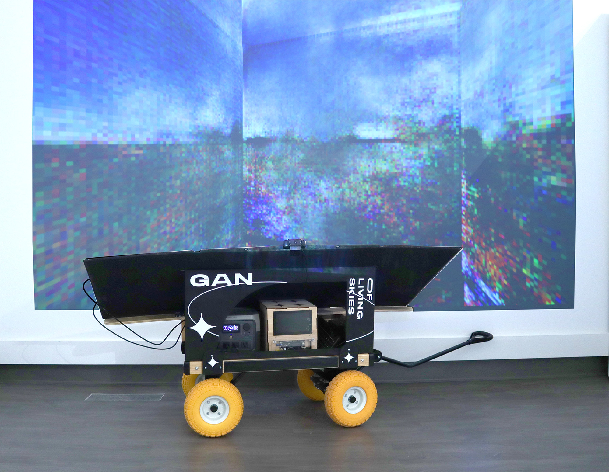
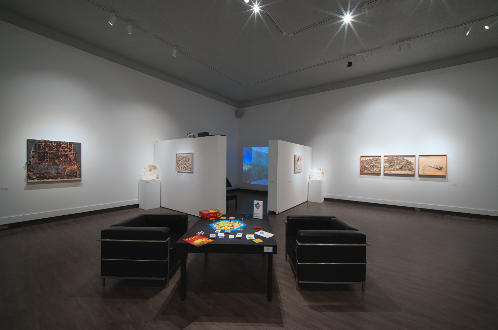
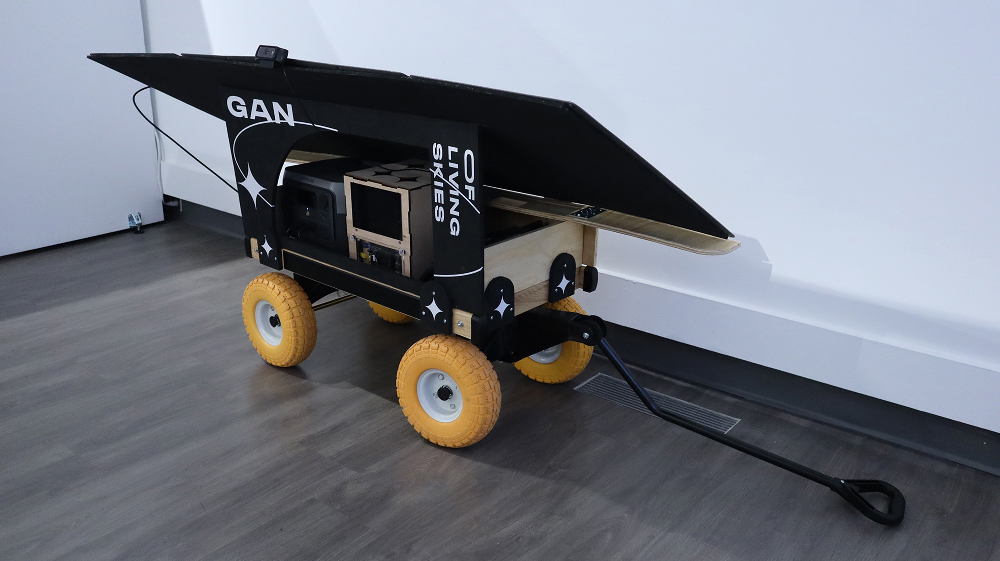

GAN of Living Skies

Firmly established as a Canadian art genre, landscape painting has been used to idealize a view of the country as an empty, natural environment ripe for exploitation. GAN of Living Skies takes the latest resource-intensive technology of artificial intelligence and reimagines its application as a climate-conscious landscape painter. It uses a generative adversarial network (GAN) to create landscape imagery from its environment. The project includes a machine-learning model, an image database, and a customized computer integrated into a portable solar-power charging station called the WaGAN. While machine-learning is traditionally resource-intensive, GAN of Living Skies mitigates its impact by relying entirely on solar energy, emphasizing our shared need to explore new models for resource-intensive computing.
The work has been developed and activated through residencies and exhibitions at Art Gallery of Regina, the Klondike Institute of Art and Culture (Dawson City, YT), and Gibraltar Point Centre for the Arts in collaboration with OCAD University's Centre for Creative Climate Action (Toronto Island, ON). The cart has been re-engineered for each new context, with a slimmed-down portable version developed for the northern and island activations.


At Art Gallery of Regina's View From the Edge of the World (2023, curated by Sandee Moore), Bluemke demonstrated the WaGAN to the audience by guiding it through the fields surrounding the gallery.




